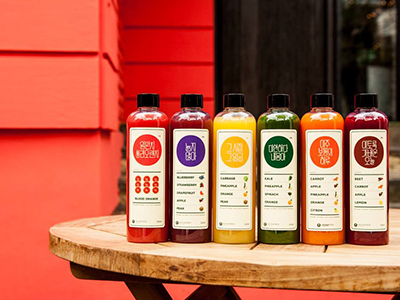
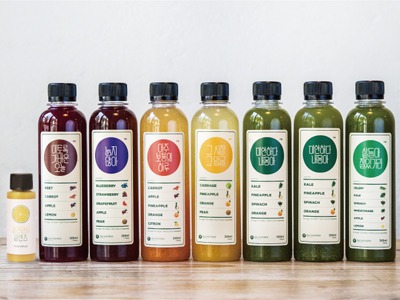
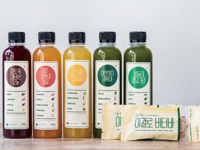
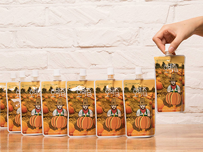

본문 컨텐츠 영역
물건 리스트
-

-

- 1일 1병 패키지
- 아침에 일어난 직후 무엇을 먹는지가 가장 중요합니다. 자고 일어난 다음, 우리 몸을 위해 가장 건강한 비타민과 미네랄을 보충하세요. 하루의 컨디션을 몰라보게 향상 시킵니다.
Order
-

- 클렌즈 패키지
- 모든 음식을 끊고 짧은 기간 내에 100% 과일채소 클렌즈 주스만 마시는 클렌즈 프로그램에 들어가보자!
Order
-

- 스키니 패키지
- 배드파머스 주스는 비타민, 미네랄로 가득한 17여종의 신선한 채소와 과일 외에 어떤 첨가물도 넣지 않고 영양소 파괴가 적은 콜드프레스 방식으로 만듭니다. 단백질 위주의 한 끼 식단과 함께 5병의 주스를 섭취해 보세요. 비교적 온화한 클렌즈 프로그램으로 활동량이 많은 분들도 큰 부담 없이 진행할 수 있습니다.
Order
-

- 호박즙 패키지
- 호박은 2002년 타임지가 선정한 10대 웰빙푸드이지만, 매일 생으로 먹기엔 불편할 뿐더러, 충분한 양을 섭취하기도 힙듭니다. 하지만!! 이런 즙이라면!!! 이제 식전에 하루 3팩으로 얼굴 관리하세요
Order